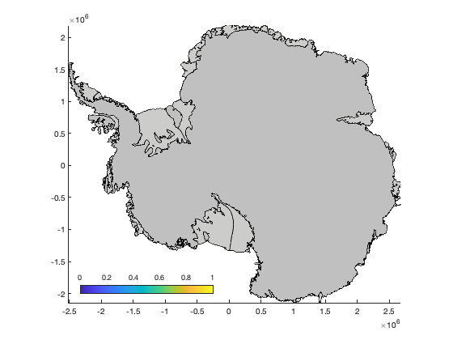
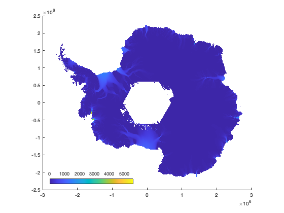
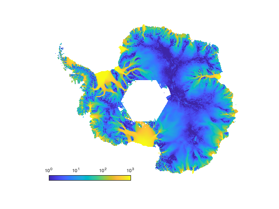

colorbarps places a horizontal colorbar in the lower left corner of a
map of Antarctica.
Contents
Syntax
colorbarps
colorbarps('PropertyName',PropertyValue,...)
h = colorbarps(...)Description
colorbarps places a horizontal colorbar in the lower left corner of the current axes. Its placement is intended to avoid covering any permanent ice in a standard map of Antarctica.
colorbarps('PropertyName',PropertyValue,...) specifies any colorbar properties.
h = colorbarps(...) returns a handle of the colorbar.
Example 1
Place a simple colorbar.
figure
antbounds % draws an outline of the continent
colorbarps
 Example 2
This example uses the ITS_LIVE velocity dataset and we'll do some fancy formatting.
figure % Plot velocity: itslive_imagesc('v') % Place a colorbar: h = colorbarps;
Remove the axes and set the color axis to a log scale.
axis off set(gca,'colorscale','log') caxis([1 1000])
Label the colorbar and make its axes and text red:
xlabel(h,'velocity (m/yr)') h.Color = 'r';
Citing AMT
If this function or any other part of Antarctic Mapping Tools is useful for you, please cite the paper that describes AMT.
Greene, C. A., Gwyther, D. E., & Blankenship, D. D. Antarctic Mapping Tools for Matlab. Computers & Geosciences. 104 (2017) pp.151-157. doi:10.1016/j.cageo.2016.08.003.
Author Info
This function and supporting documentation were written by Chad A. Greene of the University of NASA Jet Propulsion Laboratory, October 2021.